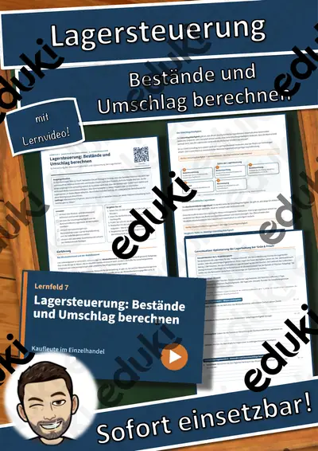
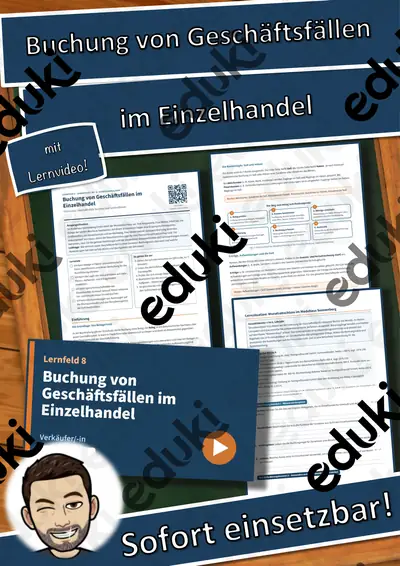
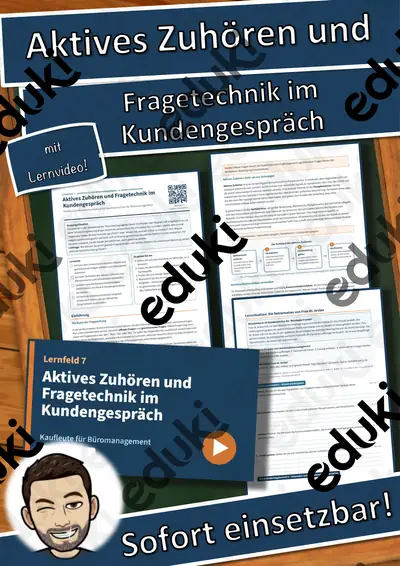
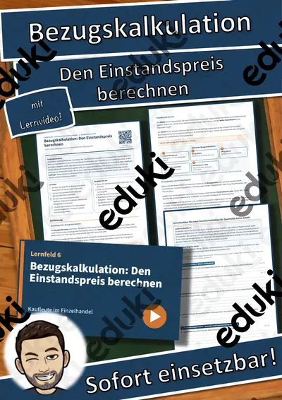
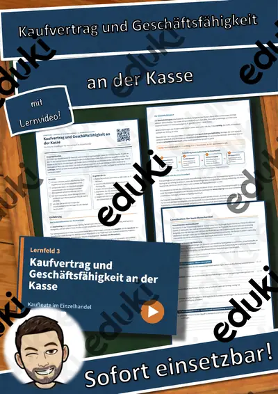
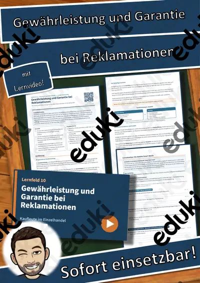

LF 2 Kaufleute für Büromanagement: Sitzungen professionell organisieren – Übungen, Lösungen + Lernvideo
Sitzungen professionell organisieren – Von der Einladung bis zum Ergebnisprotokoll
Für den Berufsschulunterricht im Ausbildungsberuf Kaufmann/ -frau für Büromanagement, Lernfeld 2 „Büroprozesse gestalten und Arbeitsvorgänge organisieren“ (1. Ausbildungsjahr).
Das steckt drin (8 Seiten):
- Einstieg mit realistischer Ausgangssituation und Leitfrage
- Einführung als Sachtext auf Berufsschulniveau mit Merkekästen
- Schaubild und Fachbegriffe-Tabelle
- handlungsorientierte Lernsituation mit Materialien
- 12 Aufgaben nach Anforderungsbereichen (I: 4, II: 5, III: 3) mit Punkten und Sozialform
- Selbstcheck, Prüfungstipp und Notenorientierung
- ausführliche Lösungen auf eigenen Seiten
- QR-Code zum passenden Lernvideo (ca. 3–6 Minuten, mit Untertiteln)Lernziele:
- Ich kann die notwendigen Schritte zur Vorbereitung einer Sitzung benennen und planen.
- Ich kann eine strukturierte Tagesordnung für ein Meeting erstellen.
- Ich kann zwischen verschiedenen Protokollarten unterscheiden und deren Einsatzbereiche bestimmen.
- Ich kann die wesentlichen Inhalte eines Ergebnisprotokolls korrekt formulieren.
Alle Betriebe, Personen und Fälle sind frei erfunden, alle Grafiken eigene Darstellungen. Sofort einsetzbar im Unterricht, für Vertretungsstunden, zur Prüfungsvorbereitung und zum selbstständigen Lernen.
FachWirtschaft, Versicherung & Verwaltung (BS)
Klasse–
SchulformBerufsschule
MaterialartArbeitsblätter, Prüfungsvorbereitung
Ähnliche Materialien
LF 11 Kaufleute im Einzelhandel: Deckungsbeitrag und Mischkalkulation – Übungen, Lösungen + Lernvideo

LF 7 Kaufleute im Einzelhandel: Lagersteuerung: Bestände und Umschlag berechnen – Übungen, Lösungen + Lernvideo
LF 2 Kaufleute im Einzelhandel: Umgang mit Kundeneinwänden und Alternativen – Übungen, Lösungen + Lernvideo

LF 8 Verkäufer/-in: Buchung von Geschäftsfällen im Einzelhandel – Übungen, Lösungen + Lernvideo

LF 7 Kaufleute für Büromanagement: Aktives Zuhören und Fragetechnik im Kundengespräch – Übungen, Lösungen + Lernvideo

LF 6 Kaufleute im Einzelhandel: Bezugskalkulation: Den Einstandspreis berechnen – Übungen, Lösungen + Lernvideo

LF 3 Kaufleute im Einzelhandel: Kaufvertrag und Geschäftsfähigkeit an der Kasse – Übungen, Lösungen + Lernvideo
